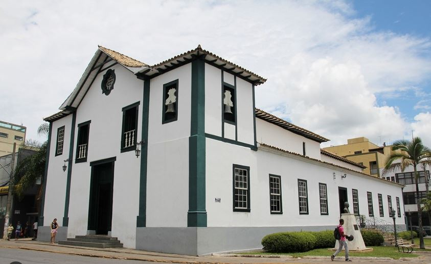
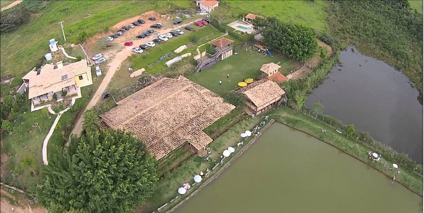
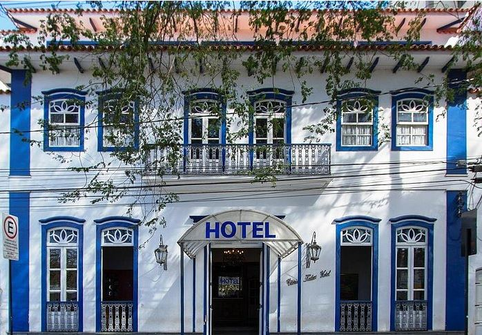

Cidade 1 é um destino encantador localizado no coração de uma região montanhosa pitoresca. Esta cidade histórica é conhecida por suas ruas de paralelepípedos bem preservadas, edifícios centenários e uma atmosfera acolhedora que atrai visitantes de todo o mundo. Com uma história rica e uma cultura vibrante, Cidade 1 oferece uma experiência única para quem a visita.
O Museu Histórico de Cidade 1 abriga uma impressionante coleção de artefatos que contam a história da cidade desde seus primórdios. Os visitantes podem explorar exposições interativas e aprender sobre as personalidades que moldaram o destino da cidade ao longo dos anos.
A Praça Central de Cidade 1 é o coração da cidade, cercada por edifícios históricos e restaurantes encantadores. É um lugar popular para relaxar, saborear um café e apreciar a arquitetura local. Durante eventos especiais, a praça ganha vida com música ao vivo e feiras de artesanato.
Uma descrição da culinária local e restaurantes recomendados.
Opções de hospedagem na cidade, como hotéis e pousadas.
Se você tiver alguma dúvida ou precisa de mais informações, entre em contato conosco: